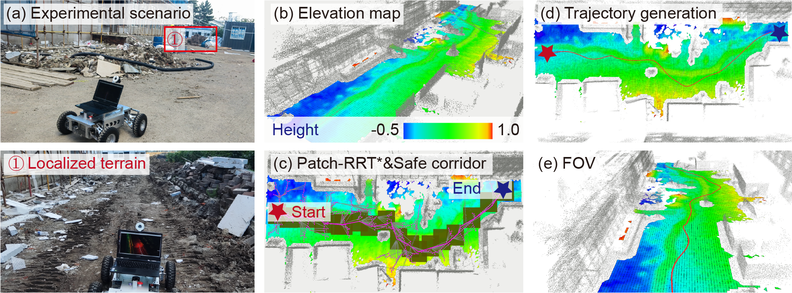

News · Poster Presentation
Our research work was presented at IROS 2025.
This poster presents a constraint-aware motion planning framework for construction vehicles on uneven terrain. By coupling terrain traversability assessment with trajectory optimization, the method improves safety and efficiency in realistic construction scenarios.
Resources
Materials will be released around the conference date.
Team
Chenlong Feng*, Coauthor A, Coauthor B, Coauthor C · Jilin University, [Your Lab / Group Name]